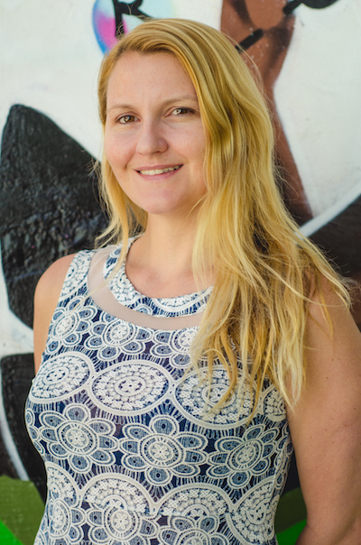

Captamos entrevista Leanne Neale, Diretora de Mobilização de Recursos da Anistia Internacional
10 de Outubro de 2017 às 07:00
Há um mito, muito difundido no mundo corporativo, de que o ideograma chinês para “crise” é formado pela junção de outros dois, cujos significados seriam: “perigo” e “oportunidade”. A mensagem é que dá para extrair algo positivo de uma situação adversa. Se a história do ideograma não passa de retórica vazia e sem sustentação, a lição embutida nela faz todo o sentido para a Anistia Internacional.
Diretora de mobilização de recursos da entidade, Leanne Neale considera que o atual contexto político e econômico do Brasil favorece uma maior mobilização das pessoas. Ela reconhece as dificuldades impostas pela crise que o país enfrenta, mas encara o momento como “muito interessante” para acolher os que estão preocupados com retrocessos em seus direitos. “Vemos isso como uma oportunidade para colocar todo mundo junto.”
No Brasil há três anos e meio, Leanne, que trabalhou com captação na Austrália, falou sobre as estratégias adotadas por sua organização para tratar de temas muitas vezes mal recebidos pelo grande público. Destaca ainda a importância de ter uma equipe bem treinada na hora de abordar potenciais doadores.
Confira a entrevista.
Captamos: Como funciona a captação de recursos da Anistia Internacional?
Leanne Neale: Fazemos captação com pessoa jurídica ou física e também com fundações. Nossa captação está intimamente ligada com o objetivo de mudança, tanto no Brasil quanto em outros países. A captação com indivíduos é especialmente importante para a Anistia. Tentamos engaja-los também na movimentação das campanhas, e a doação é vista como um ato de ativismo.
C: Vocês usam campanhas como uma forma de engajar as pessoas na captação. Essa é a principal maneira de captar recursos, inclusive no face to face?
LN: As campanhas surgem de fatos que são violências aos direitos humanos, mas não podemos ter recursos restritos. Quando falamos com um doador, dizemos que ele está apoiando toda a Anistia, e não uma campanha específica. Obviamente, quando realizamos a captação para estruturar melhor o trabalho da organização, usamos uma campanha ou um tema específico que faça sentido para a pessoa, pois trabalhamos com muitas coisas diferentes.
C: Há diferença na recepção de temas ligados aos direitos humanos aqui e na Austrália?
LN: Em qualquer país, é difícil. No Brasil, é preciso desafiar preconceitos em relação aos direitos humanos para mobilizar as pessoas. Há uma parte da população que não simpatiza com nossas campanhas, mas, ao mesmo tempo, tem muita gente que confia na Anistia como uma aliada nos temas dos direitos humanos. No momento, com a ameaça de retrocessos enormes, o papel da Anistia é cada vez mais importante.
C: Esses retrocessos vêm desde quando você chegou ao país ou se intensificaram com a polarização política dos últimos dois anos?
LN: Está mais polarizado no momento. O mais difícil, no entanto, é a crise econômica. Lançamos, em 21 de julho, uma campanha justamente sobre direitos que estão sendo ameaçados por meio de uma cortina de fumaça no Congresso. É mais difícil, mas, também, é muito interessante para acolher pessoas que estão preocupadas com retrocessos em seus direitos. Vemos isso como uma oportunidade para colocar todo mundo junto. É assim que a Anistia funciona, como um movimento de pessoas.
C: Como tem sido a captação de recursos da Anistia desde que você chegou ao Brasil?
LN: Começamos a fazer captação de maneira estratégica em 2014, então, tivemos um grande crescimento a cada ano — espero que continue. Vemos que o brasileiro está se habituando a doar, como apontado por uma pesquisa de 2016, do Instituto para o Desenvolvimento do Investimento Social (IDIS).
C: A Anistia lida com diversos temas ligados aos direitos humanos. Há questões com maior aderência e outras que vocês consideram mais complicadas de trabalhar?
LN: Alguns temas despertam mais sensibilidade, entretanto, com uma abordagem mais explicativa, tentamos reverter esse quadro sobre questões que as pessoas estranhem ou sejam pouco receptivas. Usamos uma abordagem criativa para gerar empatia. Nós tivemos uma campanha sobre a ativista dos direitos transgêneros John Jeanette, da Noruega, que recebeu uma grande acolhida por aqui. Falando sobre o que está acontecendo em outro país, estimulamos debates sobre esse assunto no Brasil, que é a nação que mais mata transgêneros. É importante que consigamos estabelecer essa conversa.
C: Na avaliação da senhora, há, algumas vezes, uma incompreensão do público sobre o significado dos direitos humanos?
LN: De vez em quando, até pode ser. Mas acho que o entendimento existe. Por exemplo, perguntamos para as pessoas qual o direito mais importante para elas. Como resposta, tivemos: “o de ir e vir”. É engraçado, porque não é um direito instituído na Declaração Universal dos Direitos Humanos, mas o que as pessoas querem dizer com isso tem relação com vários direitos humanos que estão na declaração. Isso mostra um caminho para entrarmos nessa conversa, para o conceito ser melhor compreendido.
C: Daqui para frente, quais são os desafios, na conversa com o grande público, que serão enfrentados por quem lida com direitos humanos?
LN: Há oportunidades para o ativismo e para a doação. A forma de captação vai ter de evoluir para dar conta disso, vai ter de ser mais inteligente, de conversar sobre assuntos diferentes com diversos públicos, de ser mais estratégica. Por exemplo, no ano passado, quando procuramos o que estava chamando mais atenção nas redes sociais, encontramos muitas coisas sobre direitos reprodutivos. É preciso falar sobre os temas que são mais relevantes nos direitos humanos no país.
C: Vocês costumam receber muitas críticas ou ofensas nas redes sociais? Como lidam com isso?
LN: As redes sociais são muito influentes para nossa divulgação. As campanhas aproximam as pessoas e criam conversas. Se há algo negativo, temos as respostas para contradizer. A geração de conversa é muito importante para a solução dos problemas dos direitos humanos no Brasil.
C: Ter na ponta da língua dados e respostas é especialmente importante para quem lida com direitos humanos?
LN: Quando alguém entra na equipe de face to face ou de telemarketing, há uma formação de uma semana, que inclui a história da Anistia Internacional, nossas campanhas, nossa atuação no Brasil e táticas de captação. No início, damos bastante informação, mas isso precisa continuar, pois a cada semana, temos algo diferente, as pessoas precisam estar bem informadas. Pedimos que pesquisadores ou ativistas façam palestras para nossas equipes.
C: Na captação, vocês buscam um público mais amplo ou já tentam falar com pessoas mais sensibilizadas com o tema?
LN: Fazemos um perfilamento sobre quem pode ser mais sensibilizado, mas depende muito do canal de captação. O perfil dos doadores que ficam em nossa base é bem parecido com o de outras organizações: pessoas maiores de 35 anos, mais mulheres do que homens. No telemarketing, por exemplo, buscamos pessoas que já tenham procurado a Anistia, que já demonstraram interesse em campanhas, para convertê-las em doadores.
C: As estratégias que vocês usam aqui diferem daquelas usadas em outros países ou dá para aplicar o que vem de fora?
LN: As estratégias de captação não mudam muito. Mas temos campanhas nacionais ou internacionais, e podemos escolher campanhas internacionais que sejam mais relevantes para a população, como a questão dos refugiados, que desperta grande interesse. O que não falta aqui, no entanto, é assunto.
Veja a principal dica da Leanne sobre mobilização de recursos:
Diretora de mobilização de recursos da entidade, Leanne Neale considera que o atual contexto político e econômico do Brasil favorece uma maior mobilização das pessoas. Ela reconhece as dificuldades impostas pela crise que o país enfrenta, mas encara o momento como “muito interessante” para acolher os que estão preocupados com retrocessos em seus direitos. “Vemos isso como uma oportunidade para colocar todo mundo junto.”
No Brasil há três anos e meio, Leanne, que trabalhou com captação na Austrália, falou sobre as estratégias adotadas por sua organização para tratar de temas muitas vezes mal recebidos pelo grande público. Destaca ainda a importância de ter uma equipe bem treinada na hora de abordar potenciais doadores.
Confira a entrevista.
Captamos: Como funciona a captação de recursos da Anistia Internacional?
Leanne Neale: Fazemos captação com pessoa jurídica ou física e também com fundações. Nossa captação está intimamente ligada com o objetivo de mudança, tanto no Brasil quanto em outros países. A captação com indivíduos é especialmente importante para a Anistia. Tentamos engaja-los também na movimentação das campanhas, e a doação é vista como um ato de ativismo.
C: Vocês usam campanhas como uma forma de engajar as pessoas na captação. Essa é a principal maneira de captar recursos, inclusive no face to face?
LN: As campanhas surgem de fatos que são violências aos direitos humanos, mas não podemos ter recursos restritos. Quando falamos com um doador, dizemos que ele está apoiando toda a Anistia, e não uma campanha específica. Obviamente, quando realizamos a captação para estruturar melhor o trabalho da organização, usamos uma campanha ou um tema específico que faça sentido para a pessoa, pois trabalhamos com muitas coisas diferentes.
C: Há diferença na recepção de temas ligados aos direitos humanos aqui e na Austrália?
LN: Em qualquer país, é difícil. No Brasil, é preciso desafiar preconceitos em relação aos direitos humanos para mobilizar as pessoas. Há uma parte da população que não simpatiza com nossas campanhas, mas, ao mesmo tempo, tem muita gente que confia na Anistia como uma aliada nos temas dos direitos humanos. No momento, com a ameaça de retrocessos enormes, o papel da Anistia é cada vez mais importante.
C: Esses retrocessos vêm desde quando você chegou ao país ou se intensificaram com a polarização política dos últimos dois anos?
LN: Está mais polarizado no momento. O mais difícil, no entanto, é a crise econômica. Lançamos, em 21 de julho, uma campanha justamente sobre direitos que estão sendo ameaçados por meio de uma cortina de fumaça no Congresso. É mais difícil, mas, também, é muito interessante para acolher pessoas que estão preocupadas com retrocessos em seus direitos. Vemos isso como uma oportunidade para colocar todo mundo junto. É assim que a Anistia funciona, como um movimento de pessoas.
C: Como tem sido a captação de recursos da Anistia desde que você chegou ao Brasil?
LN: Começamos a fazer captação de maneira estratégica em 2014, então, tivemos um grande crescimento a cada ano — espero que continue. Vemos que o brasileiro está se habituando a doar, como apontado por uma pesquisa de 2016, do Instituto para o Desenvolvimento do Investimento Social (IDIS).
C: A Anistia lida com diversos temas ligados aos direitos humanos. Há questões com maior aderência e outras que vocês consideram mais complicadas de trabalhar?
LN: Alguns temas despertam mais sensibilidade, entretanto, com uma abordagem mais explicativa, tentamos reverter esse quadro sobre questões que as pessoas estranhem ou sejam pouco receptivas. Usamos uma abordagem criativa para gerar empatia. Nós tivemos uma campanha sobre a ativista dos direitos transgêneros John Jeanette, da Noruega, que recebeu uma grande acolhida por aqui. Falando sobre o que está acontecendo em outro país, estimulamos debates sobre esse assunto no Brasil, que é a nação que mais mata transgêneros. É importante que consigamos estabelecer essa conversa.
C: Na avaliação da senhora, há, algumas vezes, uma incompreensão do público sobre o significado dos direitos humanos?
LN: De vez em quando, até pode ser. Mas acho que o entendimento existe. Por exemplo, perguntamos para as pessoas qual o direito mais importante para elas. Como resposta, tivemos: “o de ir e vir”. É engraçado, porque não é um direito instituído na Declaração Universal dos Direitos Humanos, mas o que as pessoas querem dizer com isso tem relação com vários direitos humanos que estão na declaração. Isso mostra um caminho para entrarmos nessa conversa, para o conceito ser melhor compreendido.
C: Daqui para frente, quais são os desafios, na conversa com o grande público, que serão enfrentados por quem lida com direitos humanos?
LN: Há oportunidades para o ativismo e para a doação. A forma de captação vai ter de evoluir para dar conta disso, vai ter de ser mais inteligente, de conversar sobre assuntos diferentes com diversos públicos, de ser mais estratégica. Por exemplo, no ano passado, quando procuramos o que estava chamando mais atenção nas redes sociais, encontramos muitas coisas sobre direitos reprodutivos. É preciso falar sobre os temas que são mais relevantes nos direitos humanos no país.
C: Vocês costumam receber muitas críticas ou ofensas nas redes sociais? Como lidam com isso?
LN: As redes sociais são muito influentes para nossa divulgação. As campanhas aproximam as pessoas e criam conversas. Se há algo negativo, temos as respostas para contradizer. A geração de conversa é muito importante para a solução dos problemas dos direitos humanos no Brasil.
C: Ter na ponta da língua dados e respostas é especialmente importante para quem lida com direitos humanos?
LN: Quando alguém entra na equipe de face to face ou de telemarketing, há uma formação de uma semana, que inclui a história da Anistia Internacional, nossas campanhas, nossa atuação no Brasil e táticas de captação. No início, damos bastante informação, mas isso precisa continuar, pois a cada semana, temos algo diferente, as pessoas precisam estar bem informadas. Pedimos que pesquisadores ou ativistas façam palestras para nossas equipes.
C: Na captação, vocês buscam um público mais amplo ou já tentam falar com pessoas mais sensibilizadas com o tema?
LN: Fazemos um perfilamento sobre quem pode ser mais sensibilizado, mas depende muito do canal de captação. O perfil dos doadores que ficam em nossa base é bem parecido com o de outras organizações: pessoas maiores de 35 anos, mais mulheres do que homens. No telemarketing, por exemplo, buscamos pessoas que já tenham procurado a Anistia, que já demonstraram interesse em campanhas, para convertê-las em doadores.
C: As estratégias que vocês usam aqui diferem daquelas usadas em outros países ou dá para aplicar o que vem de fora?
LN: As estratégias de captação não mudam muito. Mas temos campanhas nacionais ou internacionais, e podemos escolher campanhas internacionais que sejam mais relevantes para a população, como a questão dos refugiados, que desperta grande interesse. O que não falta aqui, no entanto, é assunto.
Veja a principal dica da Leanne sobre mobilização de recursos:

Leanne Neale, Diretora de Mobilização de Recursos
Crédito foto: DSC4429- Lucas Jatobá
Leanne Neale, Diretora de Mobilização de Recursos
Crédito foto: DSC4429- Lucas Jatobá
Notícias mais populares
Gestão
Em agosto de 2017, a revista ÉPOCA e o Instituto Doar divulgaram a primeira ediç&...
Contexto e tendências
Criado para tornar mais transparentes as parcerias entre a administração públic...
Profissional captador
A captação de recursos é fundamental para a sustentabilidade de uma organiza&cc...